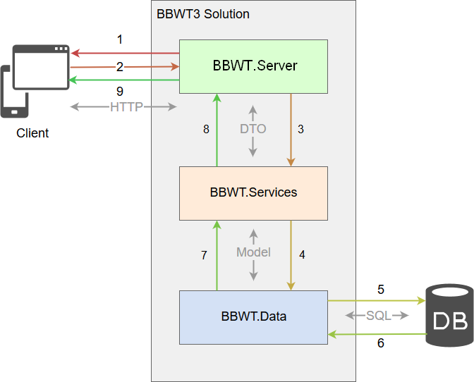
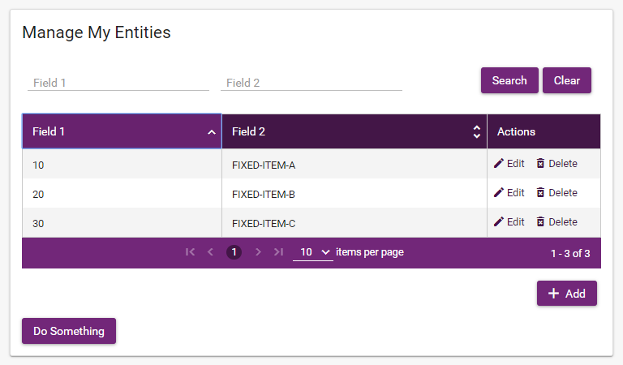
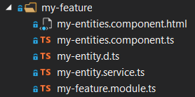
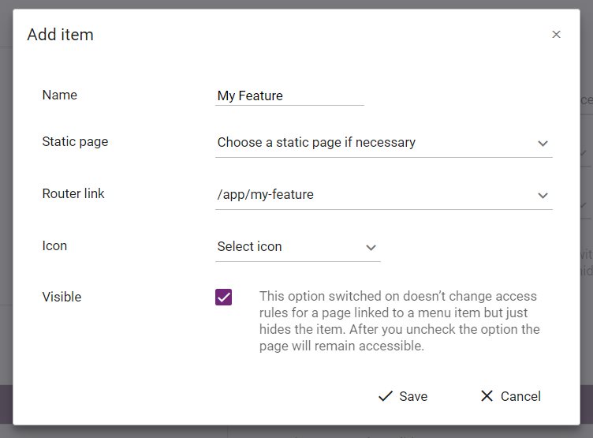
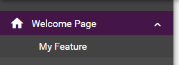

This document explains how to use BBWT3 to create a basic code for a new feature step by step.
It requires a basic knowledge of C# and Typescript (interfaces, annotations, generics, etc.). It is not needed to be experienced in ASP.NET Core or EF Core to follow this document.
Architecture
BBWT3 relies on this software stack (non-exhaustive list):
ASP.NET Core
Entity Framework Core
MySQL
MSSQL Server
Webpack
Angular / TypeScript
PrimeNG
AWS
Azure
HangFire
The source code’s solution uses Visual Studio 2019 and contains these projects that we should focus on:
project\BBWT.Client - The front-end code.
project\BBWT.Data - models of data context, DTOs and their mapping profiles.
project\BBWT.Data.MySQL - DB schema migrations for MySQL.
project\BBWT.Data.SqlServer - DB schema migrations for MSSQL Server.
project\BBWT.InitialData - creates/updates all necessary initial DB records; initializes access rules for pages routes; initializes menu.
project\BBWT.Server - The back-end code. Handles clients requests via API controllers.
project\BBWT.Services - the services layer; describes business logic; works with models/DTOs and data context.
Technical Architecture
Angular
PrimeNG
TypeScript
C#
ASP.NET Core
(on Windows or Linux)
MySQL
Or MSSQL Server
Or Postgress
Or Amazon Aurora
Middleware
Database
Client-side
Server-side
Call Sequence of a Client Request

In this figure, we can see how the different layers of the solution communicate with each other and with the exterior. The call sequence is the following:
The client downloads all the static assets, including Angular, given by BBWT3.Client with the help of Webpack (this is done only once);
When the Angular app is started on the client, it starts to make REST HTTP calls to BBWT3.Server controllers;
The controller calls the service it needs to perform the demanded request;
The service asks EF to perform a database request (if needed);
EF performs the SQL requests (this is automatic);
The resulting data is retrieved (also automatic);
BBWT.Data gives back the resulting data as models to the service;
The service converts the model into a DTO and performs operations on it if needed;
The controller responds to the HTTP request with a JSON object containing the DTO.
Adding a new feature
In this chapter we will create a new feature for a BBWT3 based project. We will cover all the steps starting from back-end to front-end required to create a basic structure of the feature.
Let's name the feature as "My Feature". This name will be associated with corresponding feature classes in code. The feature's UI will follow these requirements:
A single page, accessible by URL "/app/my-feature" for any logged user
The purpose of the page is to display a grid of records.
The grid records should be stored in the main database.
The page contains a grid component implementing basic CRUD operations: adding, editing, removing records.
The page contains a filter component to filter the grid records.
Additionally the page implements a single custom operation by clicking "Do Something" button.
Let's introduce a name describing a type of the grid's record: "My Entity". This name will be associated with corresponding entity classes in code. The feature then can be extended with any number of pages, modules and components you need, depending on requirements, but we implement a single page here.
When we complete all the steps below we should end up with this page view:

Back-end's changes
1. Add a model class to project/BBWT.Data/Model
As by our feature requirements we need records to be stored in the database, we need to create a database model. If in your requirements you don't use the database for records storing then jump directly to step 4.
Create a new class in project/BBWT.Data/Model: project/BBWT.Data/Model/MyEntity.cs
We use the plural form for table names and the singular form for a model class . So here we create "MyEntities" table and "MyEntity" model class.
2. Add a DbSet for your model to project/BBWT.Data
In order to add our new model to the database context, add properties into these classes: project/BBWT.Data/DataContextBase.cs
publicDbSet<MyEntity> MyEntities { get; set; }
project/BBWT.Data/IDataContext.cs
DbSet<MyEntity> MyEntities { get; set; }
3. Add a database migration for models changes
If you modify the models schema by adding, editing or deleting models (in our example we do it on step 1, step 2) then these changes should be applied to the database using migrations.
Depending on your project requirements you support either SQL Server or MySQL provider.
Using CLI set BBWT.Server as an active folder and run a corresponding command, depending on your data provider. Adding migration for SQL Server
dotnet ef migrations add <MigrationName> -p ../bbwt.data.sqlserver -s ./
This command creates a migration file in project/BBWT.Data.SqlServer/Migrations folder and also updates the database snapshot (DataContextModelSnapshot class) in the same folder.
Adding migration for MySQL
dotnet ef migrations add <MigrationName> -p ../bbwt.data.mysql -s ./
This command creates a migration file in project/BBWT.Data.MySQL/Migrations folder and also updates the database snapshot (DataContextModelSnapshot class) in the same folder.
In both examples <MigrationName> is a descriptive name of the migration, without white spaces . For our case it can be named AddMyEntity, for example.
A good practice is to review a newly created migration file and check that all the migration commands it includes correspond your model schema changes.
After we've created and reviewed the migration file, let's apply the changes to the database. There are two ways to do it.
Simply run your local application. As we suppose in this document that you run your application locally and apply changes for your local database, then for this case the application automatically applies migrations on starting up. It means you don't need any additional actions. This is a recommended choice.
In case if you need to apply the changes forcibly before the application starts, run one or both of these commands, depending on database providers you support:
Applying migration for SQL Server
dotnet ef database update -p ../bbwt.data.sqlserver -s ./
Applying migration for MySQL
dotnet ef database update -p ../bbwt.data.mysql -s ./
4. Add a DTO to project/BBWT.Data/DTO
Now that we have a model which is applicable to the database context, we need a DTO class to represent data for the client-side.
A DTO class is a representation of a database entity, formatted for the client-side. Its properties can match the model completely or differ, depending on data required on the client-side.
This is a recommended approach. It was developed in BBWT for ease of use. Doing so you keep a model along with its mapping and avoid creating an extra file with a mapping class, at least you avoid adding of extra code lines with mapping into a separate file. Bear this in mind in order to auto-register a mapping properly: on the application start the BBWT searches for static & public implementations of the RegisterMap(IMapperConfigurationExpression) method through all the project's models inherited from IEntity.
Approach 2. Create a new mapping profile class
Otherwise, if you need mappings to be added separately due code flexibility/complexity etc., create a mapping profile's class named “ <your_entity_name>MappingProfile ” in BBWT.Data/Mapping . project/BBWT.Data/Mapping/MyEntityMappingProfile.cs
If the DTO properties names do not exactly match the model properties (for example, you need to map MyEntity.CreatedOn to MyEntityDTO.CreationDate) then here you explicitly specify the properties mapping using the properties projection (ForMember() method).
Another example of the projection is when you need to make property values conversion (for example, a coefficient should be presented in percentage: MyEntity. CompressionKoef to MyEntityDTO.CompressionPercent).
Both examples are shown in this code:
CreateMap<MyEntity, MyEntityDTO>(). .ForMember(dto => dto.CreationDate, o => o.MapFrom(m => m.CreatedOn)) .ForMember(dto => dto.CompressionPercent, o => o.MapFrom(m => m.CompressionKoef * 100))
Here we define an interface inherited from IPagedCrudService.
We have a helper classes and interfaces which implement grids and CRUD capabilities. You can define an interface either as:
public interface IMyEntityService if you need a custom interface without paging / CRUD capabilities
public interface IMyEntityService: IPagedCrudService<MyEntityDTO> if you need an interface with paging & CRUD capabilities
public interface IMyEntityService: ICrudService<MyEntityDTO> if you need an interface with CRUD capabilities
To give our new service some new functionality we define a single new method DoSomething().
7. Add a service class to BBWT.Services
After we've declared the interface we will add a corresponding class to implement the service's methods. Create a new class “ <your_entity_name>Service ” in BBWT.Services folder. project/BBWT.Services/MyEntityService.cs
//Implementation of our DoSomething method, declare in IMyEntityService interface publicasync Task DoSomething(intsomeValue, CancellationToken cancellationToken = default) { //an example of business error handling if(someValue <= 0) thrownewBusinessException("The value must be greater than zero");
//...the method's implementation }
//An example how to override a base CRUD method publicoverrideasync Task Delete(intid, CancellationToken cancellationToken = default) { var entity = await GetQueryable<MyEntity>().FirstOrDefaultAsync(x => x.Id == id);
if(entity != null) { //... //doing some custom logic, e.g. check if it's possible to delete the entity //...
As we declared the interface as supposed to implement paging & CRUD functionality, then the MyEntityService class is inherited from the PagedCrudServiceBase, which implements the basic methods.
In particular, here we demonstrate how to override a base CRUD method Delete(), thereby claiming that the method should implement some custom logic, different from the base one. More examples of methods overrides you can find in one of the core services. For example, in modules/BBWM.Core.Membership/Services/UserService.cs.
The DoSomething() method includes a code part demonstrating an errors handling:
if(someValue <= 0) thrownewBusinessException("The value must be greater than zero");
We use errors handling through all the layers of the server-side. It's based on exceptions throwing and then handling them according to an exception type. See the core exception types here: modules/BBWM.Core/Exceptions.
8. Register your service in project/BBWT.Services/ServiceCollectionExtension.cs
In order to make your service instances be automatically created by the dependency injection (DI), link the service interface to the service class in a special method: project/BBWT.Services/ServiceCollectionExtensions.cs
As our service is declared to implement paging & CRUD functionality, the controller is inherited correspondingly from PagedCrudControllerBase.
The example code has one API method DoSomething() that calls a corresponding service's method and outputs with some HTTP response code and data.
10. Add initial data to database in project/BBWT.InitialData/ProjectInitialData.cs
Sometimes a project's logic requires database records to be initially created before the application starts. These records remain as read-only in the tables or editable later on, depending on the table's purpose. It can be records for tables with item statuses (like invoice or order status), item types (like organization type) etc. For instance, the BBWT3 application adds records of initial versions of email templates which can be edited later on the website's page.
If your feature requires initial data to be added then stay on this step.
Suppose our feature requires 3 records to be initially added into the MyEntities table and then remain unchanged. Suppose we will identify our records by "Field2" field. Let's use these values: "FIXED-ITEM-A", "FIXED-ITEM-B", "FIXED-ITEM-C".
Note, for simplicity of the feature's sample, we will not consider fixing these records as read-only in the grid's UI! project/BBWT.InitialData/ProjectInitialData.cs
namespaceBBWT.InitialData { internalstaticclassProjectInitialData { publicstaticvoidEnsureInitialData(IDbContext context) { // Add project's data initialization here. // Initialization is completed with: context.SaveChanges();
// The list of fixed items which should exist in initial database by a project requirement var items = newMyEntity[] { newMyEntity { Field1 = 10, Field2 = "FIXED-ITEM-A"}, newMyEntity { Field1 = 20, Field2 = "FIXED-ITEM-B"}, newMyEntity { Field1 = 30, Field2 = "FIXED-ITEM-C"} };
// Searching in existent records by the identifying field's value (Field2) of the first fixed item if(!context.Set<MyEntity>().Any(x => x.Field2 == items[0].Field2)) { context.Set<MyEntity>().AddRange(items); context.SaveChanges(); } } } }
11. Add route roles in project/BBWT.InitialData/RouteRolesDataService.cs
In BBWT3 we link each page's route to a list of roles the page is allowed for. project/BBWT.InitialData/RouteRolesDataService.cs
namespaceBBWT.InitialData { publicpartialclassRouteRolesDataService : IRouteRolesDataService { //... publicvoidInitRouteRoles() { var result = newList<PageInfoDTO> { newPageInfoDTO("/app/my-feature", "My Entities", AggregatedRole.Authenticated), //... }; //... } } }
In our case the route is "/app/my-feature" and the roles list is presented by a single role AggregatedRole.Authenticated, stored as a constant. AggregatedRole.Authenticated is not a role in terms of roles & permissions of the .Net Core Identity, but is our custom implementation to indicate if user is authenticated or not. See modules/BBWM.Core.Membership/Enums/AggregatedRole.cs
12. Add a unit test to test/BBWT.Services.Test
Automatic units testing is an efficient way to avoid/reveal code bugs and issues on a pre-deployment stage of continuous integration (CI). If you decide to use it then stay on this step.
Create a separate folder MyFeature in test/BBWT.Services.Test project. There we will place all tests for the feature services.
We have the only MyEntityService service in our sample. Create a class MyEntityServiceTest the service's tests will be added to, as shown in example: test/BBWT.Services.Test/MyFeature/MyEntityServiceTest.cs
namespaceBBWT.Services.Test.MyFeature { // The class inherits PagedCrudServiceTestBase to implement built-in paging/CRUD tests publicclassMyEntityServiceTest : PagedCrudServiceTestBase<IMyEntityService, MyEntityDTO, int> { // Generates a fake MyEntityService protectedoverrideIMyEntityService GetService<TContext>(TContext context) { if(!(context isDataContext ctx)) { thrownewInvalidCastException(); }
returnnewMyEntityService(ctx, this.Mapper); }
// Generates a fake MyEntityDTO object with random values protectedoverrideMyEntityDTO GetEntity() { var faker = newFaker<MyEntityDTO>() .RuleFor(p => p.Id, s => 0) .RuleFor(p => p.Field1, s => s.Random.Int(0, 1000)) .RuleFor(p => p.Field2, s => s.Random.String2(10)); returnfaker.Generate(); }
// The base class' method, required to be overriden protectedoverrideIEnumerable<FilterInfoBase> GetFilters() { thrownewNotImplementedException(); }
// The base class' method, required to be overriden protectedoverridevoidChangeAttribute(MyEntityDTO entity) { entity.Field2 = entity.Field2 + " New"; } } }
As our MyEntityService implements paging/CRUD logic then we inherit MyEntityServiceTest from corresponding base class to implement basic testing functionality. In the example above we create a single test of an entity adding , its method simply calls the method of the base class.
Now we are ready to run tests for the feature.
Front-end's changes
In the front-end code a feature is presented by an Angular module which contains all its components, services and interfaces.
Feature oriented structure
In BBWT3 we use a feature oriented structure approach to keep files organized. It means all the feature's files are placed into a single folder. For our feature we will create my-feature folder.
All Angular modules that represent project-specific UI features are placed into project/BBWT.Client/src/app/project. Then the full path for the feature's files will be project/BBWT.Client/src/app/project/my-feature.
To make files navigation simple we keep a plain files structure inside a feature's folder by default. Particularly, the plain files structure simplifies references declarations in files. For our feature it looks so:

So you can easily observe all your files.
When the files structure gets bigger then you can put files into sub-folders, grouping them by categories. We use this file sub-folders template:
<feature folder>/components - HTML & TS & CSS files of Angular components
<feature folder>/... - you can extend the template depending on your structure complexity.
So, for example, if you've got more than 6 files of components then you create <feature folder>/components folder for them. The minimum number of files required for a sub-folder is arguable. It's up to developer to decide, but the main purpose is to have a readable and easy to navigate files structure.
1. Add an entity interface
We need an entity interface at the front-end to represents a DTO class of the back-end (step 4). Create an interface with name "I<your_entity_name>". project/BBWT.Client/src/app/project/my-feature/my-entity.d.ts
A DTO object, when it's sent to client, is automatically mapped to a front-end's entity object.
In debug mode you may notice that "id_original" field is added to the entity object. This is done for security. The "id" field is replaced by hashed value (e.g "id"="1-DA6DEA9A1EA22DA4" where real ID=1) and "id_original" contains the original ID (e.g "id_original"=1). More details here.
Use the "id" field as an entity identifier for the front-end coding.
2. Add a service class
A service class communicates with corresponding end-point at the server-side (controller) and can implement methods required to work with paging, CRUD and other custom functionality. project/BBWT.Client/src/app/project/my-feature/my-entity.service.ts
import { HttpClient } from "@angular/common/http"; import { Injectable } from "@angular/core"; import { HttpResponsesHandlersFactory } from "@bbwt/modules/data-service"; import { PagedCrudService } from "@features/grid"; import { IMyEntity } from "./my-entity";
MyEntityService extends PagedCrudService class to implement paging & CRUD functionality required by the server-side. Also we added doSomething() method to call a corresponding controller's method.
Note, we declare:
publicreadonlyurl = "api/my-entity";
which matches the end-point's route, declared in the controller class on the previous step:
[Route("api/my-entity")]
3. Add an Angular component
We will place all the UI into a single Angular component. It will include:
a grid component to list entity records and implement CRUD operations
a filter component to filter out the grid's elements
a custom button to call DoSomething() method
Create an HTML markup file for all the listed elements above: project/BBWT.Client/src/app/project/my-feature/my-entities.component.html
Then create a typescript file that will be linked to the markup and will contain the component's code and describe its behaviour: project/BBWT.Client/src/app/project/my-feature/my-entities.component.ts
import { Component, ViewChild } from "@angular/core"; import { Validators } from "@angular/forms"; import { MyEntityService } from "./my-entity.service"; import { GridColumn, CellEditingInputType } from "@features/grid"; import { FilterSettings, InputType, FilterType } from "@features/filter"; import { GridValidator } from "@features/grid"; import { MessageService } from "primeng/api"; import { Message } from "@bbwt/classes";
// "Do Something" button's handler doSomething() { this.myEntityService.doSomething(100).then(() => { this.messageService.add(Message.Success("Something has been done!", "Do Something")); }); } }
The body of the component's class contains initialization of the grid's column, the filter's settings and a method that handles the "Do Something" button's click.
The component's class is linked to the HTML markup via the templateUrl parameter in the @Component decorator section: project/BBWT.Client/src/app/project/my-feature/my-entities.component.ts
templateUrl: "./my-entities.component.html"
4. Add an Angular module
In the front-end code of BBWT3, along with having all files placed into the feature's folder, the feature oriented structure requires to create an Angular module. The module contains all feature's elements (components, services, interfaces etc.). In other words, an Angular module represents a feature. The module can be used just as a container for its elements or even to export the elements to other Angular modules.
In our example, the module is a container for its component, entity service and entity interface. It's a single page and it's elements are not supposed to be reusable by other modules. Create a module named "<your_feature>Module": project/BBWT.Client/src/app/project/my-feature/my-feature.module.ts
// Angular import { RouterModule } from "@angular/router"; import { NgModule, CUSTOM_ELEMENTS_SCHEMA } from "@angular/core"; import { CommonModule } from "@angular/common"; import { FormsModule, ReactiveFormsModule } from "@angular/forms"; import { PrimeNgModule } from "@primeng";
// BBWT import { GridModule } from "@features/grid"; import { FilterModule } from "@features/filter"; import { BbCardModule } from "@features/bb-card";
import { MyEntitiesComponent } from "./my-entities.component"; import { MyEntityService } from "./my-entity.service";
// Links components to the pages routes constroutes = [ { path: "", component: MyEntitiesComponent, data: { title: "My Entities"} } ];
// Links components to the pages routes constroutes = [ { path: "", component: MyEntitiesComponent, data: { title: "My Entities"} } ];
Here we define a relative route to the component's page within the module. The full route is <route_to_the_module> + "/" + <relative_route>. For our case it's "app/my-feature" + "/" + "" = "app/my-feature". It means we link our grid UI component to a base route of the module.
Lets have a look at one more example to explain how module routing works (it's not included into our feature's sample code). If we decide to extend our feature with a new component EntitiesDashboardComponent then, in order the component to be shown on some page, we need to link it to a route. The MyEntitiesComponent, as said above, is already linked to a base route of the module. Then we will link the EntitiesDashboardComponent to a sub route: "app/my-feature" + "/" + "dashboard" = "app/my-feature/dashboard". Finally we will have this routes applied to the module:
"app/my-feature" (a page with MyEntitiesComponent)
"app/my-feature/dashboard" (a page with EntitiesDashboardComponent)
Then we need to add a new line into the routes array:
In our project, the modules of built-in features are linked to the main application module as lazy loading feature modules by default. In our example we will follow this approach.
Add the line into the project-routing.ts to define how to link the module, as shown here: project/BBWT.Client/src/app/project/project-routing.ts
Having this defined, Angular will associate "my-feature" root and all the feature's sub-roots with the MyFeatureModule and its components. In our example, when user requests a page with a URL containing a route "app/my-feature" Angular will open a page with MyEntitiesComponent loaded.
Application run-time
Now that you've completed the back-end and the front-end parts, you can start your application. More details on how to start a BBWT3 application, read here ("Building and Running" section)
When you've started the application, the first page you will see in browser is the login page. The next step(s) will require administrator's credentials, therefore you should better log in under demo-admin@bbconsult.co.uk demo account, which includes both super admininstrator and system admininstrator roles. See login credentials in Bitwarden ("BBWT3 Test Site" collection).
1. Add feature's page to menu
The feature's page is already accessible by this route "/app/my-feature".
If you need to get to the page via main menu of the application, follow these steps:
go to the menu configuration page: Menu > Operational Admin > Menu Configuration ("/app/menu" route)
Click "Add" button to add a menu item. Let's add it inside the "Welcome Page" as it's shown on this picture:

Reload the page and check the menu. It should include a new item:

On application start, the menu configuration is initiated from a repository file "project/BBWT.Server/data/menu/main-menu.json". After you edit the menu in run-time the file is update with a new configuration. Then you should commit it into your repository. This method, when the configuration is stored in repository, allows us to synchronize the menu through all application instances - local developer's deployments and test server deployments.
We've completed all the steps!
Now lets go to the feature's page and check it out. The page should look similar to the provided demo view above!
All the code samples of the feature are workable and placed into this GIT branch of the BBWT3 repository.


{kind=link}
{kind=link}
{kind=link}
{kind=link}
{kind=link}